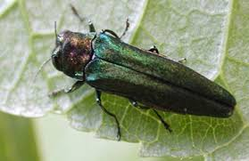

Jedds Tree Care Services

Emerald Ash Borer
- Attacks ash trees.
- From Asia.
- woodpeckers like EAB larvae; heavy woodpecker damage on ash trees may be a sign of in festation.
- Adult beetles are a maetallic green and about 1/2-inch long.
- Adults leave a d shaped exit hold in the bark when they emerge in the spring.
For more Information